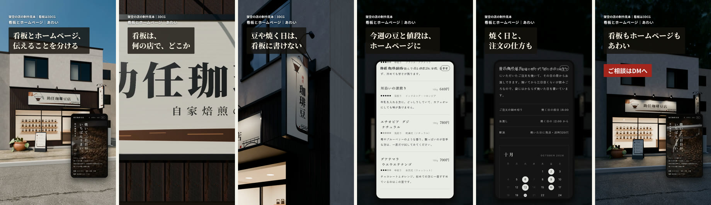

助任珈琲豆店
看板とホームページの広告
36秒の縦長動画（声入り）。架空の店の制作見本で、看板は3DCGです。まだ投稿していません。
iPhoneで保存したら、共有ボタンから「ビデオを保存」で写真アプリに入ります。
投稿文（媒体ごと）
媒体名を開いて「コピー」を押すと、そのまま貼り付けられます。
YouTube
タイトル
説明欄
TikTok
投稿文
投稿文
Threads
投稿文
トピック：ホームページ制作
X
投稿文
映像の流れ

36秒の縦長動画（声入り）。架空の店の制作見本で、看板は3DCGです。まだ投稿していません。
iPhoneで保存したら、共有ボタンから「ビデオを保存」で写真アプリに入ります。
媒体名を開いて「コピー」を押すと、そのまま貼り付けられます。
